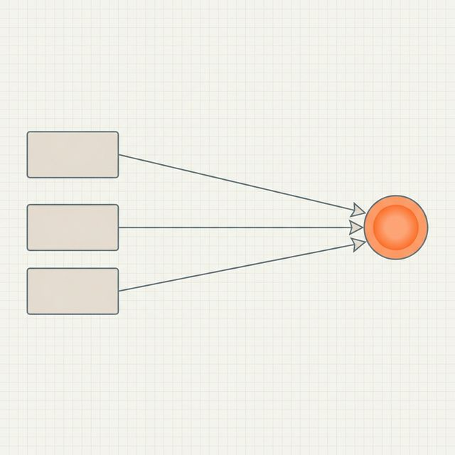
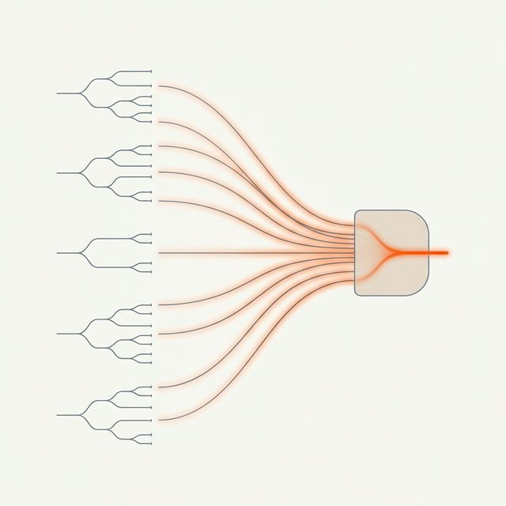

Purpose
This report documents the first modeling stage: baseline diagnostics across multiple model families.
The goal at this stage is to identify which types of models can detect fraud signal reliably enough to justify further tuning.
Fraud detection is an imbalanced classification problem. In this dataset, fraudulent claims represent roughly one quarter of records, while non-fraud claims represent roughly three quarters. That class ratio creates a common failure mode: a model can achieve high accuracy by mostly predicting the majority class while missing fraud cases.
To avoid that trap, the baseline comparison focused on metrics that reflect minority-class detection quality, especially:
- PR-AUC (Precision–Recall Area Under Curve)
- Recall
- F2 score (which gives more weight to recall than precision)
Accuracy was recorded, but not treated as the main decision metric.
1. Why Baseline Diagnostics Matter
Before tuning hyperparameters or adjusting thresholds, it is important to check whether a model family can detect fraud at all.
Different algorithms learn patterns in very different ways. Some work well when signal is smooth and roughly linear. Others work better when risk appears in pockets, thresholds, or feature interactions.
Fraud patterns tend to be irregular. They often depend on combinations of conditions such as:
- incident severity
- claim composition
- policy age
- missing documentation
A baseline diagnostic phase helps separate:
- models that can learn those patterns
- models that collapse into majority-class predictions
2. Sanity Check: The Dummy Classifier
A DummyClassifier is a deliberately simple baseline. It does not learn fraud patterns. It predicts using a fixed strategy such as always choosing the majority class.
Example:
from sklearn.dummy import DummyClassifier
dummy = DummyClassifier(strategy="most_frequent")
dummy.fit(X_train, y_train)
y_pred = dummy.predict(X_test)This is useful because it gives a floor for performance.
If a trained model produces accuracy similar to the dummy model, then the model is not learning meaningful signal. It is mostly reproducing class imbalance.
In this project, the dummy baseline showed why accuracy alone could not be trusted. A model that predicts “non-fraud” most of the time can look good by accuracy while doing very little operational work.
3. Broad Model Screening (Default Baselines)
The first pass used a broad baseline comparison across model families with default or near-default settings. This stage is similar to a technical interview round for algorithms: everyone gets the same simple setup, and the weak candidates usually reveal themselves quickly.
The baseline comparison included:
- DummyClassifier (sanity check)
- Logistic Regression
- RidgeClassifier
- Bernoulli Naive Bayes
- Random Forest
- Extra Trees
- XGBoost
The same train/test split and evaluation metrics were used for all candidates, so differences in results reflect model behavior rather than evaluation inconsistency.
4. The Accuracy Trap
Many baseline models produced accuracy values in a similar range (around ~0.80).
At first glance, this looks reassuring. In reality, it hides major differences.
Two models can both report 80% accuracy while behaving very differently:
- Model A predicts almost everything as non-fraud
- Model B detects a meaningful share of fraud cases but generates some false positives
From an operations perspective, those models are not remotely equivalent.
That is why the comparison emphasized:
- Recall → how many fraud cases were caught
- Precision → how many flagged cases were actually fraud
- PR-AUC → how well the model ranks fraud risk under class imbalance
5. Linear Models: Why They Struggled
5.1 Logistic Regression
What it is
Logistic regression is a linear classifier. It estimates the probability of fraud by assigning a weight to each feature and combining them into a single score.
In plain language:
- each feature “pushes” the prediction up or down
- the pushes are added together
- the final score is converted into a probability
That makes it interpretable and useful in many business settings.
Why it struggled here
Fraud risk in this dataset does not appear as one smooth pattern. It depends on combinations and thresholds.
Examples of patterns that are hard for a plain linear model:
- high severity + short policy tenure
- missing collision type + unusual claim composition
- certain category combinations that only matter together
Logistic regression does not discover interactions automatically. It also tends to favor the majority class under imbalance unless the feature space is heavily shaped for it.
In the baseline run, logistic regression failed to detect fraud reliably and collapsed to zero recall in one setup. That means it predicted no fraud cases at the default threshold.
5.2 RidgeClassifier
What it is
RidgeClassifier is another linear model. It applies L2 regularization, which means it penalizes large coefficients. The penalty helps reduce overfitting and stabilizes the model when features are noisy or correlated.
You can think of it like adding a “don’t overreact” rule to the model.
Why it failed here
The regularization itself is not the main issue. The larger issue is still the same:
- the model is linear
- fraud patterns are not cleanly separable with one global boundary
- imbalance makes majority-class predictions statistically “cheap”
In the baseline comparison, RidgeClassifier predicted only the majority class in at least one setup, which made fraud precision/recall undefined.
That behavior is a warning sign: the model family is not a strong fit for early fraud detection in this feature space.
6. Naive Bayes: What It Does and Why It Sometimes Looks Better Than Expected
6.1 What Bernoulli Naive Bayes Is
Naive Bayes is a probabilistic classifier.
It estimates:
The “naive” part comes from a simplifying assumption: It treats features as independent from each other once the class is known.
That assumption is almost never fully true in real fraud data. For example:
- claim amount and claim components are related
- severity and total damage are related
- documentation gaps and claim type may be related
So the model uses a simplification that ignores a lot of real-world dependencies.
Why it can still work
Even with unrealistic assumptions, Naive Bayes can perform reasonably well because:
- it is stable
- it estimates class probabilities directly
- it often remains less brittle than some linear classifiers in imbalanced settings
It is like using a rough map that ignores side streets. The map is incomplete, but it can still get you into the correct neighborhood.
6.2 Why BernoulliNB Specifically
Bernoulli Naive Bayes is designed for binary-valued features (0/1 style inputs), such as:
- missingness flags
- one-hot encoded categories
- threshold indicators
That makes it a reasonable baseline after feature engineering creates many binary indicators.
In this project, BernoulliNB performed surprisingly well on some baseline metrics relative to linear models. It still has limitations because the independence assumption is too strong for a real fraud system, but it provided a useful reference point.

7. Tree-Based Models: Why They Survived Baseline Screening
7.1 Random Forest
What it is
Random Forest builds many decision trees and averages their predictions.
Each tree learns a sequence of rules such as:
- if severity is high
- and policy is young
- and claim structure looks unusual
- then fraud risk increases
Because the forest combines many trees, it becomes more stable than a single tree.
Why it works better here
Fraud patterns are often conditional and irregular. Random Forest can capture those interactions without manually creating every combination in advance.
7.2 Extra Trees (Extremely Randomized Trees)
What it is
Extra Trees is similar to Random Forest but adds more randomness when building splits.
That extra randomness often reduces overfitting and can work well when the signal is messy.
Why it performed well
In the baseline diagnostics, Extra Trees detected fraud with non-zero recall and useful precision, while linear models struggled. This makes it a strong candidate for further tuning.
It behaves well in tabular datasets with mixed numeric and categorical-engineered features, especially when fraud signal appears in local pockets.
7.3 XGBoost
What it is
XGBoost is a gradient boosting model. Instead of training many trees independently (like Random Forest), it trains them sequentially.
Each new tree focuses on correcting the mistakes of the previous trees.
This often produces strong performance on structured/tabular data.
Why baseline XGBoost may look uneven
Boosting models are powerful but sensitive to setup:
- learning rate
- tree depth
- class weighting
- threshold choice
With baseline/default settings, XGBoost can underperform or produce weak recall. That does not mean the model family is unsuitable. It means it needs tuning and proper imbalance handling.
That is exactly why baseline diagnostics come before optimization.

8. Why Feature Representation Changed the Results
The baseline comparison also tested more than one dataset representation.
This matters because models do not process the same feature space in the same way.
Linear models need help
Linear models need the feature space to be shaped into something close to additive structure. They benefit from:
- buckets
- binary flags
- grouped categories
- explicit temporal markers
Without that, they often miss minority patterns.
Tree models use richer structure directly
Tree models can work with:
- thresholds
- interactions
- local patterns
- high-cardinality detail (when encoded appropriately)
When fed a tree-optimized feature set, tree-based models improved. That confirms the engineering decision to create separate representations for different model families.
9. Baseline Diagnostic Outcome
The baseline stage produced a clear shortlist for the next phase.
Candidate families for tuning
- Extra Trees
- Random Forest
- XGBoost (with tuning and imbalance handling)
Reference baselines (kept for comparison, not primary candidates)
- Logistic Regression
- RidgeClassifier
- BernoulliNB
This is an important milestone because it prevents wasted tuning effort. Hyperparameter optimization is useful only after the model family itself has shown it can detect fraud signal.
Key Takeaway
The baseline diagnostics established which model families are structurally compatible with this fraud detection problem.
The main findings were:
- Accuracy was not informative under class imbalance.
- Some linear models defaulted to majority-class predictions and failed to detect fraud.
- Probabilistic Naive Bayes provided a useful reference baseline.
- Tree-based models detected fraud signal more reliably and responded well to the tree-oriented feature representation.
This screening stage created a disciplined entry point into the next modeling phase: recall-weighted optimization and threshold design.